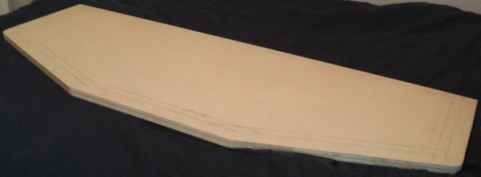
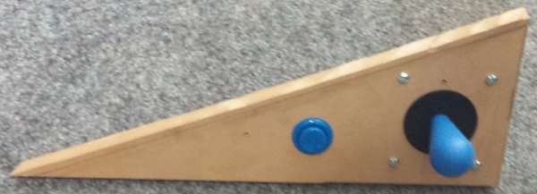
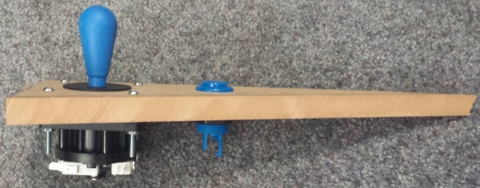
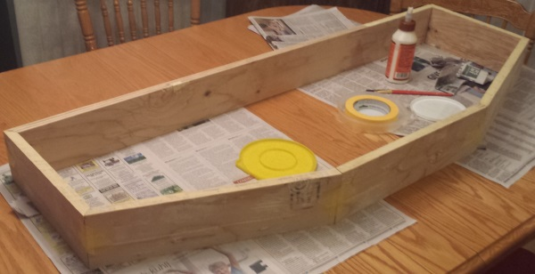
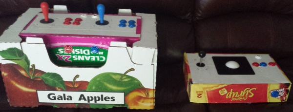
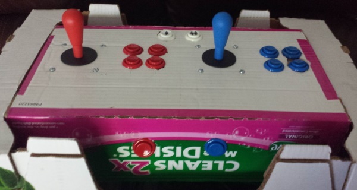
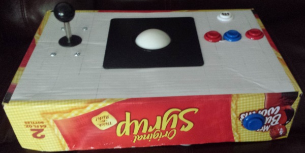

Computer Programmer
I've always been a big fan of classic arcade games. I've seen pictures online of other peoples' MAME machines, and I thought I'd get in on that action! I don't have room for an entire cabinet, but I'd love to play emulators using authentic arcade parts, with enough to play with friends. I've been planning a 4-player desktop arcade controller, and most of the parts have already been delivered. I've been cutting and attaching scrap plywood and MDF in my free time, and I'm hoping to have it completed this summer!
I've cut an MDF board into the shape of my top panel, which will eventually have most of the arcade parts mounted into it! It should be mounted to the rest of the case with a piano hinge. A slot has been cut into the side for T-Moulding.
I tested the mounting of some controls with a scrap of MDF. I learned that a battery-powered hand-drill can't make many consecutive 1-1/8" holes before running out of juice, and my plans call for over 40! These pieces are quite secure, but I may use different bolts on the joysticks depending on how I want the final look. Perhaps I should order black carriage bolts?
The walls of the controller are being made out of 6 pieces cut out of plywood. The lengths and angles took some careful measurements, and still took a good deal of sanding, putty, and caulk in the end to fit together. In this picture, they are being glued together in order to cement its shape. I later leveled the top and bottom, caulked the joints, and added corner braces to the 90 degree angles. The next step is cutting out a bottom board that fits into this frame!
Last year, when the parts arrived but I didn't have wood ready, I was eager to test them! I measured and punched out holes into cardboard boxes as if they were wood panels, installed the parts, and even wired them to control boards underneath to make them functional! However, I've since removed the wires and electronics, so I could not demonstrate the wiring for these photos.
My first controller prototype! 2 players each had an 8-way joystick, 4 game buttons, a start button and a coin button on the front. The switches underneath were wired to an I-PAC2 board, which treats the inputs like keyboard keys and plugs into a computer's USB port. My nephew's had a chance to play games with this prototype! Someday, I'm sure they'll get to play on my finished controller!
My second controller prototype. A classic 1-player controller with a 4-way joystick and trackball. The trackball and 3 buttons were wired to an Opti-Wiz board, which treats them as a USB mouse, while the joystick and other buttons went into another I-PAC2 board. My final controller will need all 3 of the control boards together to support 4-players and analog devices such as the trackball. I plan on plugging them all into a USB hub inside, so that the whole box can work with a single cord coming out!